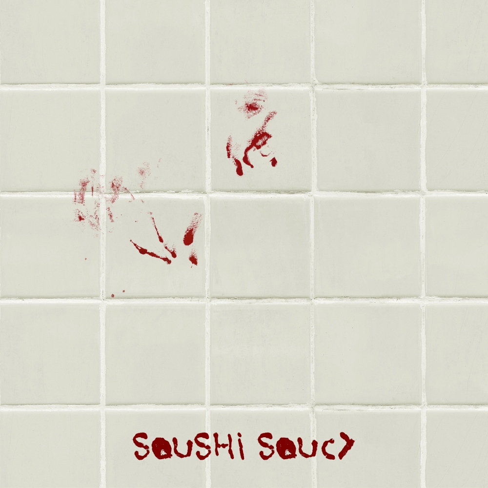
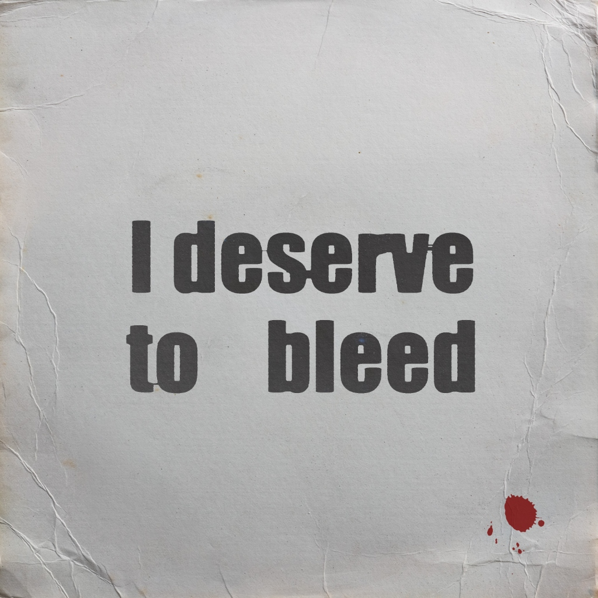
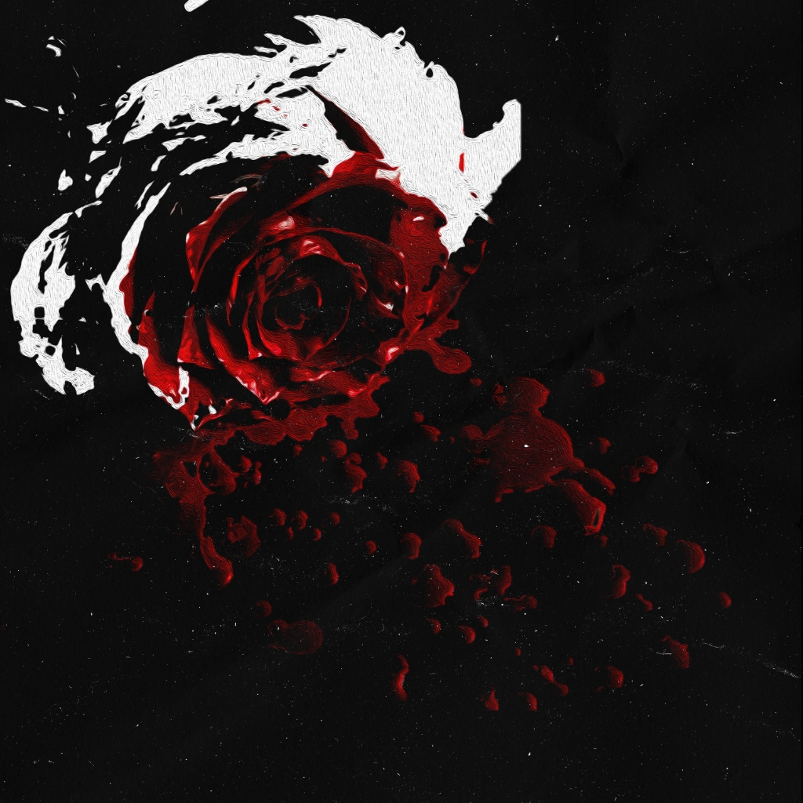
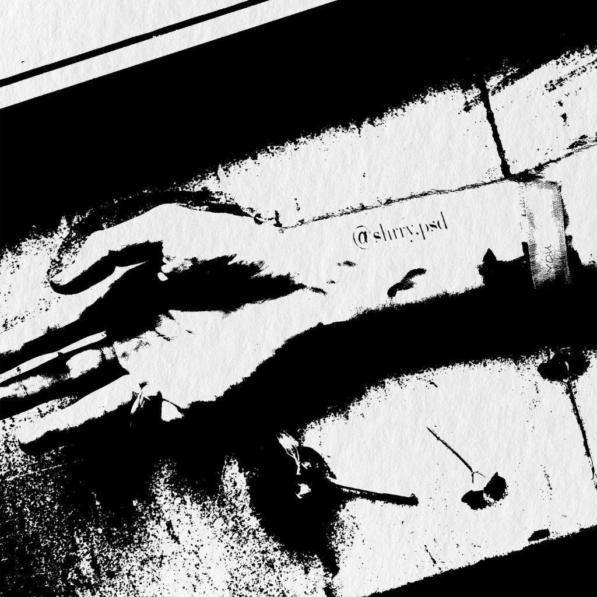

I DESERVE TO BLEED
SUSHI SOUCY
“A personal reinterpretation of an existing song through distressed textures, expressive typography and unsettling imagery. The project explores the relationship between pain, beauty and visual intensity.”

Final Redesigned Album Cover · 1000 × 1000 Master Artwork
The Concept
“The visual direction explores the contrast between something delicate and something disturbing. The tiled surface creates a familiar, almost ordinary setting, while the red marks interrupt its cleanliness and introduce a sense of unease. The typography becomes another expressive element, giving the artwork a raw, personal character.”
This personal reinterpretation re-imagines Sushi Soucy's track by grounding visceral emotion in a tangible, domestic space. The clinical ceramic grid acts as a neutral canvas, thrown into sharp psychological friction by the abrupt violence of the crimson marks and handwritten lettering.
* Note: This is an unofficial personal concept redesign created to explore an alternative visual direction, and is not officially affiliated with or commissioned by the artist.
Surface Detail · Ceramic Tile Grid, Smeared Red Marks and Expressive Lettering
Typography Exploration
Investigating raw, expressive lettering and its psychological contrast with tactile surfaces.

Expressive Weight and Surface Decay
Typography plays a decisive role in shaping the emotional identity of the redesign. Against the calculated order of the tiled cover, the handwritten red lettering creates an immediate, visceral human presence — as if scrawled in an urgent, unedited moment.
In this separate typographic study, heavy ultra-condensed letterforms are pressed into wrinkled, aged paper. The physical creases, stains, and isolated crimson droplet at the lower corner examine how unyielding typographic mass interacts with the fragile vulnerability of decaying paper.
Visual Exploration
Extending the project's visual direction into darker imagery, rich crimson pigments and high-contrast shadow studies.

Crimson Rose & Void Study
A supporting visual exploration developing the project's darker atmosphere, deep colour palette and emotional intensity. Blooming white petals emerge from a pitch-black void, washed in saturated blood splatter and dripping crimson ink.

High-Contrast Monochrome
Companion photographic investigation exploring raw thresholding, high-contrast shadows and tactile paper tooth. Examines how monochrome harshness complements the visceral red mark-making of the release.
Final Design & Physical Format
The complete visual identity presented as digital cover artwork and translated into physical cassette tape packaging.
Final album cover redesign — personal interpretation.
 Custom Cassette Tape · Front Shell & Rose Label
Custom Cassette Tape · Front Shell & Rose Label
 Cassette Spine · Case Edge with Rose Medallion
Cassette Spine · Case Edge with Rose Medallion
Project Details
| PROJECT | I Deserve to Bleed |
|---|---|
| TYPE | Personal Project (Unofficial Redesign) |
| CATEGORY | Album Cover Redesign |
| FORMAT | Digital Album Artwork & Cassette |
| ORIGINAL WORK | Existing song by Sushi Soucy |
| ROLE | Cover Artwork, Typography and Visual Direction |